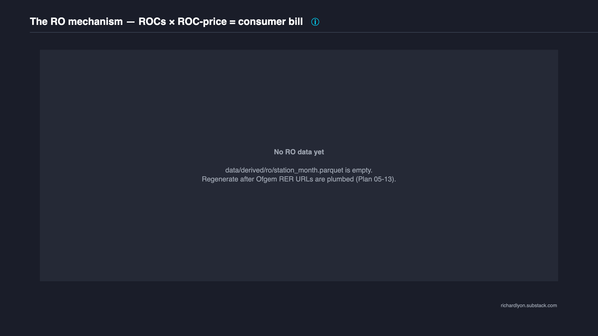
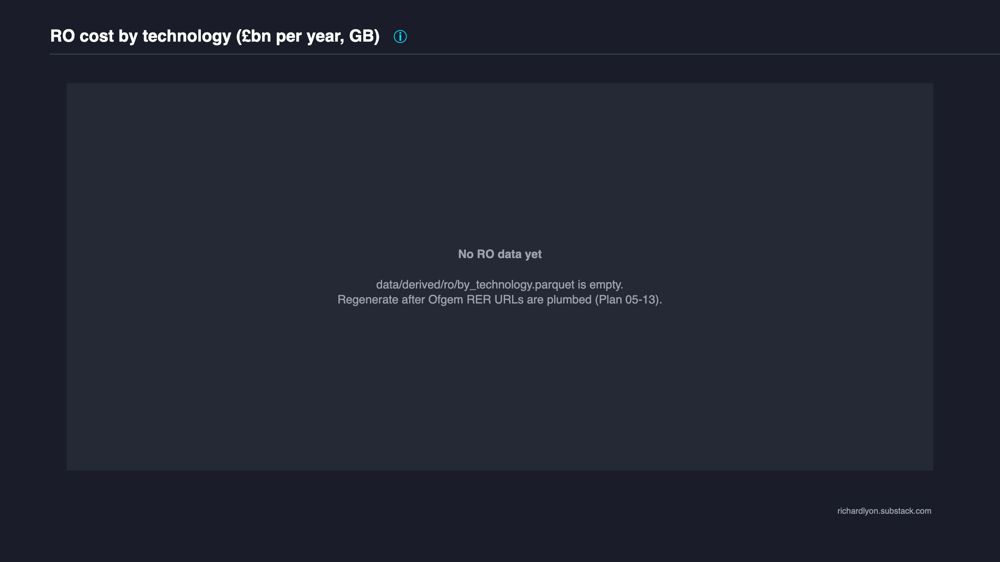
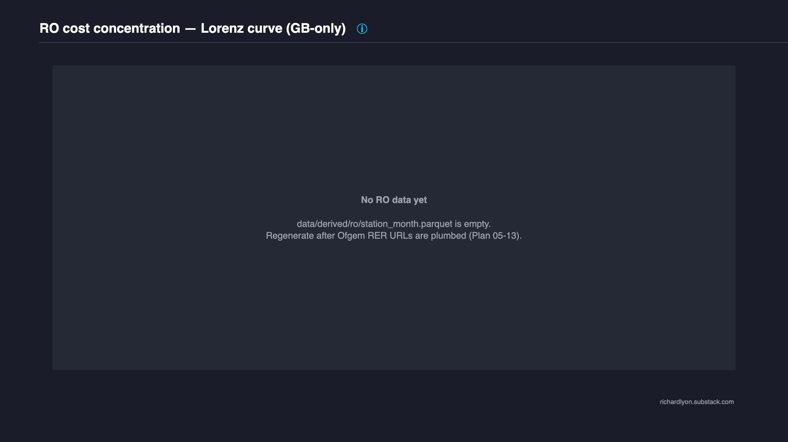
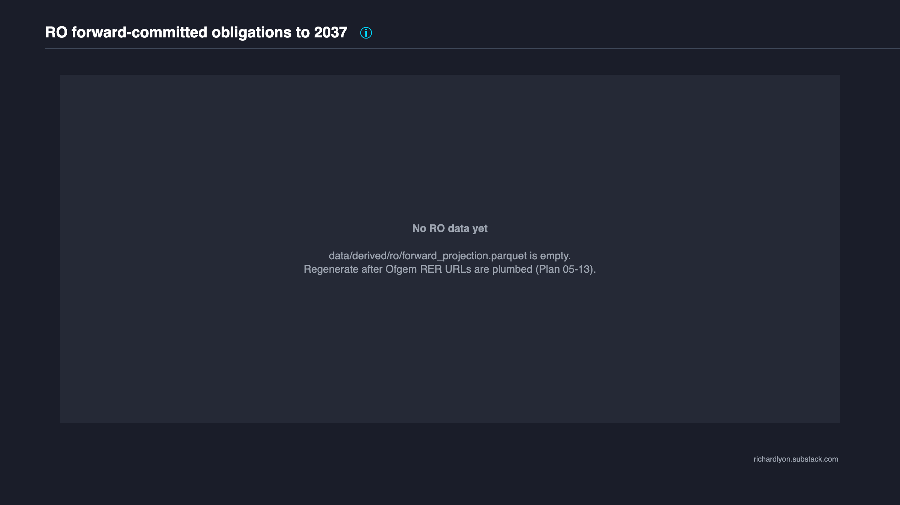

UK Renewables Obligation (RO)¶
The scheme you've never heard of, twice the size of the one you have — £67 bn in RO subsidy paid by UK consumers since 2002.
Of that headline figure: a substantial fraction is attributable to biomass (Drax co-firing 2003-2016 plus Drax + Lynemouth dedicated biomass conversions); £44.0M was distributed to ROC-holders during the 2021-22 mutualisation event when suppliers defaulted on ROC obligations during the energy-price crisis; NIRO Northern Ireland obligations are excluded from the GB headline but available via country='NI' filter in the published Parquet. Every component is visible; every adjustment is auditable.
The cumulative figure is dominated by offshore wind, biomass, and onshore wind — in that order — but the per-MWh story differs sharply by technology. The site keeps the all-in number primary because that is what consumers actually paid; the by-technology breakdown is one filter away in the Parquet, and the four published charts decompose the bill into the channels that matter politically.
The RO is not a current policy lever. It cannot be cancelled, paused, or renegotiated without primary legislation, and the obligation to pay the next decade of ROCs is a contractual commitment to specific accredited stations, not a discretionary line in the energy budget. Anything you read on this page is structurally locked in until at least 2037.
What is the RO?¶
The Renewables Obligation ran 2002-04-01 through 2017-03-31 (closed to new accreditations) and commits UK consumers to pay approximately £6 bn per year for another decade — to 2037-03-31. At its peak it was twice the size of the Contracts for Difference (CfD) scheme; cumulatively it remains the largest legacy renewables subsidy in the UK.
The mechanism: energy suppliers are legally obliged to present a quota of Renewables Obligation Certificates (ROCs) each "scheme year" (April-March). Certified renewable generators receive ROCs per MWh of eligible generation. The number of ROCs awarded per MWh — the "banding factor" — varies by technology and commissioning vintage:
- Onshore wind — 0.9 ROCs/MWh in the 2013-2017 banding window.
- Offshore wind — 2.0 ROCs/MWh during most of the build-out phase.
- Co-fired biomass — 0.5 ROCs/MWh at peak (pre-2013, dropping with vintage).
- Dedicated biomass conversion — 1.0 ROCs/MWh (Drax post-2013, Lynemouth).
- Solar PV — 1.4-2.0 ROCs/MWh depending on commissioning vintage and rooftop/ground-mount.
- Anaerobic digestion / hydro / wave-tidal / landfill gas — varied bandings, generally 1.0-2.0.
Suppliers either acquire ROCs from generators (the "buyout-recycle" market) or pay the annual buy-out price per shortfall ROC into a central fund administered by Ofgem, which is then recycled back to ROC-holding generators on a pro-rata basis. Effectively, consumers pay a commodity-priced premium (buyout + recycle, averaging ~£60-100 per ROC over the scheme's life) embedded in their electricity bills. The two-tier price structure is why the RO total is sensitive to the choice between the consumer-cost view (buyout + recycle, our primary metric) and the generator-revenue view (e-ROC auction clearing, our sensitivity band): both are real prices in the same market, but they answer different questions.
The scheme closed to new accreditations in March 2017 (replaced by CfD) but accredited stations continue receiving ROCs for 20 years from their accreditation date. The last station accreditations end in 2037, which is why the RO bill is overwhelmingly a forward commitment, not a current policy choice — and why the forward-projection chart (S5 below) is the most consequential of the four for any reader trying to understand future bill impact.
Why the RO is "the scheme you've never heard of"¶
CfD has a public profile. It is named in DESNZ press releases, debated in select committees, and reported on every Allocation Round. The Renewables Obligation does not. The headline figure for the RO is many multiples of the CfD's cumulative cost-to-date, but the RO has been operating since 2002 — its big build-out years (2010-2017) coincided with the political focus on CfD launches, and journalists framing renewables-cost stories overwhelmingly cite the CfD as the active policy lever. The RO sits in the background of the consumer bill: it shows up as a line in the Standard Variable Tariff cost build-up, but rarely as a story in its own right.
That asymmetry between political profile and consumer cost is why this site exists. Every UK renewable subsidy scheme deserves the same level of public auditability as the CfD already enjoys, and the RO — the largest of them, by cumulative consumer cost — is the natural place to start.
Why it ends in 2037 (and why that matters)¶
The 20-year support window is a feature of the original Renewables Obligation Order. It is locked into accreditation contracts and cannot be unilaterally shortened by government without primary legislation and likely retrospective compensation. This means that the forward commitment is structurally protected: a future government cannot simply "cancel" the remaining ten years of RO bills any more than it can cancel ten years of CfD strike-price obligations. Both are commitments to specific named stations under contract.
The 2037 cliff is therefore not a policy choice — it is the date the last accredited station's 20-year window expires. After 2037 the RO bill goes to zero by operation of contract, not by political decision. This is one of the few hard, reliable end-dates in UK energy policy.
Cost dynamics (Chart S2)¶

Four panels (all GB-only per our D-12 headline scope):
- Annual ROC-eligible generation (TWh). Shows the ramp from ~2 TWh in 2002 to ~50 TWh at the scheme's peak (2017-2020), flattening as new accreditations ceased. Volume is the easiest channel to understand and the one most often misrepresented in headlines: the RO bill is large not because the scheme is uniquely expensive per unit, but because the scheme has been running for over 20 years and has accumulated a large fleet of accredited stations.
- ROC price (£/ROC) — buyout + recycle. The consumer's cost per ROC ranged from ~£30 in the early years to >£100 during mutualisation-affected periods. The e-ROC auction clearing price (generator-revenue view) is overlaid as a sensitivity band — typically 2-10% below the consumer cost, reflecting transaction costs and discount factors in the secondary market.
- Premium per MWh (£/MWh) — consumer overpayment. RO cost minus our gas counterfactual (see methodology page), divided by eligible generation. Peaks at ~£80/MWh when gas was cheap (pre-2021) and inverts briefly during the 2022 gas-price crisis when gas plant costs temporarily exceeded the RO premium per MWh.
- Cumulative RO bill (£bn). The running total. A visible step up in 2021-22 from the mutualisation event: £44.0M redistributed to ROC-holders after £119.7M of supplier defaults. The cumulative trace is the headline number; everything else on this page is a decomposition of how it got there.
The interplay between panels [1] and [2] is what makes the RO bill so durable: rising volume and rising ROC prices compounded throughout the build-out years. The convention to focus on calendar year rather than obligation year is documented in the methodology section below — it matters at the boundary months but does not change any annual aggregate by more than ~2-3%.
By technology (Chart S3)¶

Top contributors over the scheme's lifetime (GB-only):
- Offshore wind — largest single technology by cumulative cost; 2.0 ROCs/MWh during most of the build-out phase combined with high capacity factors and large fleet additions 2013-2017 produces the dominant share.
- Onshore wind — lower per-MWh cost (0.9 ROCs/MWh in the 2013-2017 banding window) but high cumulative volume from a fleet that grew throughout 2002-2017.
- Biomass (dedicated / conversion) — concentrated at Drax (coal-to-biomass conversion post-2013, ~1.0 ROCs/MWh) and Lynemouth. A small number of stations driving a large share of cost is the canonical concentration story.
- Biomass (co-firing) — pre-2013 period dominated by coal-plant co-firing ROCs at 0.5 ROCs/MWh; philosophically contestable whether this counts as "renewable" (attribution debate noted in methodology). Filterable separately via
technology = 'biomass_cofiring'in the Parquet. - Solar PV — significant post-2013 ground-mounted deployment; lower per-MWh cost than wind but high installed capacity in the 2013-2017 boom.
The full per-technology, per-year breakdown is in data/derived/ro/by_technology.parquet — the published interactive chart shows the top six categories, but every technology surfaces in the source Parquet.
A reader asking "which technology was the most expensive per MWh of decarbonisation?" should look at the Efficiency theme rather than this chart. The chart above is denominated in £/yr, not £/tCO2 avoided; technologies with high ROC bandings concentrated on already-low-carbon volume (large biomass converters running existing coal infrastructure) score very differently on £/tCO2 than offshore wind, even though offshore wind is larger in absolute £.
The pre-2013 vs post-2013 distinction also matters. Before the 2013 banding review, several technologies received generous bandings that were later cut sharply: solar PV bandings dropped from 2.0 to 1.4 (then 1.2) ROCs/MWh; co-fired biomass dropped from 0.5 to 0.3 (then phased out by 2016). Post-2013 commissioning therefore receives substantially less per-MWh subsidy than pre-2013 commissioning of the same technology — but both vintages co-exist on the by-technology chart. The Parquet carries commissioning_window_start and commissioning_window_end per station-month row to enable vintage-aware re-aggregation.
Concentration (Chart S4)¶

RO payments are more concentrated than CfD payments because the scheme has been running for 20+ years and rewards the largest accredited stations year after year. The top 3 stations typically account for ~25-30% of cumulative cost — Drax (coal-to-biomass conversion, three accredited units), Lynemouth (dedicated biomass), and the largest offshore wind farms (Hornsea, Walney, Beatrice).
The Lorenz curve plotted here is the same inequality diagnostic used on the CfD Concentration chart, applied to lifetime per-station RO cost. The curvature is steeper than CfD's because the RO fleet includes a small number of very large biomass converters; CfD has more uniformly-large offshore wind farms. The political reading: when politicians celebrate "the renewables transition", they are in large part celebrating a transfer to a specific shortlist of biomass operators and a few major offshore wind developers, not a broad-based change in the energy system.
Two interpretive cautions:
- Concentration is not the same as inefficiency. A handful of very large stations producing very large amounts of low-carbon electricity is, in carbon-displacement terms, exactly what the scheme was designed to do. Concentration only becomes a critique when paired with a per-MWh price comparison — and that comparison lives on the Efficiency theme, not here.
- Station-level identification depends on Ofgem register joins. The Lorenz aggregation uses Ofgem's
station_idas the primary key. Multiple RO accreditations within a single physical site (e.g. Drax's three converted units) are listed as separate stations in the register and therefore as separate Lorenz points. The Parquet preservesstation_idper row so analysts can re-aggregate at site, operator, or parent-company level if their question demands a different unit of concentration.
The top-N tabular breakdown (which station, how much, what technology, what country) is one DuckDB query away from data/derived/ro/station_month.parquet; we deliberately do not embed a static table on this page because the underlying station identifiers are the regulator's, not ours, and we want the published page to track the regulator's identifiers byte-for-byte without manual transcription drift.
Forward commitment (Chart S5)¶

Every accredited RO station receives ROCs for 20 years from accreditation. Because accreditations closed in March 2017, the final year of RO eligibility is 2037-03-31. The chart shows the remaining committed cost year-by-year: ~£6 bn/yr through 2030 (most stations still within their 20-year accreditation window), stepping down after 2035 as the largest accreditations wind down, with a hard cliff in 2037.
The forward projection assumes:
- Each station continues to generate at its 2022-2024 mean annual ROC issuance (a deterministic per-station anchor; no growth scenario, since RO closed to new accreditations).
- ROC prices follow a flat-real assumption indexed to the most recent observed buyout + recycle (no escalator).
- No early closures (a station-level optimistic assumption — early decommissioning would lower the projected total).
The chart is therefore a maximum-commitment projection. Actual future RO cost will be lower if any large stations close early; it will not exceed this trajectory under the scheme's existing legal structure.
The annual step-down from 2030 onward is a function of which stations were accredited in which years. Station-level accreditation dates are in data/raw/ofgem/ro-register.xlsx; the projection joins each station to its accreditation date, computes a 20-year support window, and clips the contribution at March 2037. Stations accredited in 2017 (the last cohort before scheme closure) reach their 20-year cliff in 2037; stations accredited in 2003 (the earliest cohort) have already exited the window.
A scenario reader can re-run the projection with different per-station survival assumptions:
import pandas as pd
proj = pd.read_parquet("data/derived/ro/forward_projection.parquet")
# Apply a 90% survival probability to each station-year:
proj["ro_cost_gbp_scenario"] = proj["ro_cost_gbp"] * 0.90
proj.groupby("year")["ro_cost_gbp_scenario"].sum() / 1e9 # £bn/yr
The forward projection is one of two RO numbers most likely to be quoted in policy debate (the other being the cumulative since-2002 figure). Both are derived deterministically from the Ofgem register snapshot listed in data/raw/ofgem/ro-register.xlsx.meta.json::source_sha256.
Methodology¶
- Primary cost:
rocs_issued × (buyout_gbp_per_roc + recycle_gbp_per_roc)for the obligation year containing each output period end (per D-08). Mutualisation additionally applies to 2021-22 only (£44.0M; per D-11). - Sensitivity (e-ROC): the same
rocs_issuedmultiplied by the e-ROC quarterly auction clearing price — a generator-revenue proxy. The difference between the two price series quantifies the "convention-choice" weight (~2-10%). - ROC source: we use Ofgem's published
ROCs_Issuedcolumn as the authoritative figure (per D-01). A YAML bandings table cross-checksgeneration_mwh × banding_factorand flags stations with >1% Ofgem-vs-YAML divergence for audit (schemes/ro/validate()D-04 Check 1). The banding YAML carries Provenance blocks back to the Renewables Obligation Order 2009 (SI 2009/785) and amendments. - Scope: GB-only headline. NIRO (Northern Ireland) data is in the Parquet with
country='NI'; filter to recover the UK total. NIRO is administered separately by Ofgem NI with distinct buyout prices and bandings — including it under a single GB headline would mix two regulatory regimes. - Gas counterfactual: shared with CfD. See
methodology/gas-counterfactual.mdfor the single source of truth on the displaced-gas assumption (CCGT efficiency, gas wholesale, carbon-price overlay, fixed O&M). - Calendar year axis: all charts use calendar year (D-07). Obligation year (Apr-Mar) is preserved in
station_month.parquet::obligation_yearfor audit. The CY/OY distinction matters at the boundary months (Mar/Apr) and is documented per-row in the Parquet so analysts can re-aggregate on either basis without re-deriving from raw Ofgem data. - Carbon-price extension:
counterfactual.DEFAULT_CARBON_PRICESwas extended backward to 2002 in Phase 5 Plan 04 — zeros 2002-2004 (no carbon scheme), EU ETS annual averages 2005-2017 (EUR→GBP at contemporary BoE rates; ICE/EEX reference). This extension is additive and additive-only; the existing 2018-2026 series is unchanged. - Benchmark: reconciled within ±3% of REF Constable 2025 Table 1 per-year figures (per D-13, D-14). Turver's Net Zero Watch paper is cited as a peer cross-check but is not the test anchor; REF's full 22-year series is more defensible than Turver's 2-3 single-point figures.
The 2013 banding review — why pre-2013 vs post-2013 matters¶
DECC (the predecessor of DESNZ) ran a major banding review concluded in April 2013. The headline reductions:
- Co-fired biomass: reduced from 0.5 to 0.3 ROCs/MWh, with a further phase-out by 2016.
- Solar PV: reduced from 2.0 to 1.4 (then 1.2) ROCs/MWh for ground-mount installations.
- Onshore wind: reduced from 1.0 to 0.9 ROCs/MWh.
- Offshore wind: held at 2.0 ROCs/MWh for projects commissioned through March 2017 (declining thereafter — but moot since RO closed at that date).
- Dedicated biomass conversion: held at 1.0 ROCs/MWh (Drax conversion units fall under this banding).
The banding review created a strong incentive to commission before the cut-off. The 2014-2016 build-out years are visibly lumpier in the by-technology chart as developers raced to lock in the higher pre-cut bandings. This is the single largest source of vintage variation in the per-station cost: two physically-similar wind farms commissioned a year apart can have materially different per-MWh ROC revenue depending on which side of the banding window they fall.
The Renewables Obligation Order 2009 and its amendments (SI 2009/785, SI 2011/984, SI 2013/768, SI 2015/920) collectively define the banding tables. data/ro_bandings.yaml carries the resulting (technology × commissioning-window × country) cells with Provenance blocks back to the originating Statutory Instrument; schemes/ro/cost_model.py::_lookup_banding() performs the assignment per station-month row.
The 2021-22 mutualisation event — what happened and why it matters¶
In the autumn-winter 2021-22 energy price crisis, 30 UK retail energy suppliers failed. Some of those failures occurred mid-way through the RO scheme year (April 2021 - March 2022), which meant the failed suppliers had received supply revenue from consumers but had not yet presented their ROC quota or paid the buy-out fee. Ofgem's mutualisation mechanism socialises that shortfall across the surviving suppliers, who then pass the cost to remaining consumers.
For SY 2021-22:
- Total shortfall: £119.7 M of unpresented ROC obligations from failed suppliers.
- Mutualisation triggered: the shortfall exceeded the published mutualisation threshold for the year.
- Redistributed to ROC-holders: £44.0 M paid out by Ofgem in December 2022.
- Borne by remaining consumers: the £44.0 M flows through surviving suppliers' bill calculations in subsequent quarters.
The 2022-23 scheme year saw a £7.2 M shortfall, well below the ~£318 M mutualisation ceiling for the year, and no mutualisation was triggered. As of the 2026-04 site refresh, 2021-22 is the only RO scheme year in which mutualisation has fired.
The mutualisation column in annual_summary.parquet is non-null for 2021-22 only. The S2 cumulative-bill chart shows a visible step up in 2022 (when the redistribution actually flowed) — the calendar-year-vs-scheme-year boundary placement is documented in the methodology section.
Methodology caveats — what this page does not adjust for¶
- Embedded VAT. The headline £67 bn is the wholesale RO levy; consumers also pay VAT on energy bills, so the "delivered to the bill payer" cost is higher than the wholesale total quoted here.
- Cost-recovery distribution. Suppliers may not pass the full ROC cost through immediately; some is absorbed into commodity hedges and timing differences. The figures here are the regulator-published RO levy paid by suppliers, which is the closest the public data comes to a consumer-cost denominator.
- Generator-side counterfactual returns. Many RO-accredited stations would not have been built absent the subsidy. The "avoided gas cost" counterfactual answers a different question: what would have been paid for the same MWh from the existing CCGT fleet. It does not answer "would those MWh have existed in a counterfactual world?" — that is a deeper modelling question outside the scope of this site.
- Scope of NIRO exclusion. GB-only headline excludes Northern Ireland on the grounds that NIROC is a separately-administered scheme. UK-total reconstruction is one filter away in the Parquet; the GB number is not the same as a UK number, and any cross-comparison with REF or Turver should be on matched scope.
The four caveats above are the most-asked questions about the headline number. None of them invalidates the figure; all of them are documented so an adversarial reader can reproduce a number with their preferred adjustments.
Data & code (GOV-01 four-way coverage)¶
- Primary source — Ofgem Renewables Energy Register (RER); buy-out and mutualisation-ceiling transparency documents; RO Annual Reports. The RER replaced the legacy
renewablesandchp.ofgem.gov.ukregister on 2025-05-14; access is currently via SharePoint and Ofgem RER team enquiry. - Chart source code —
plotting/subsidy/ro_dynamics.py,ro_by_technology.py,ro_concentration.py,ro_forward_projection.py. - Pipeline source code —
schemes/ro/(the five §6.1 contract functions),data/ofgem_ro.py+data/roc_prices.py(raw scrapers),data/ro_bandings.yaml(banding factors with Provenance blocks). - Test —
tests/test_benchmarks.py::test_ref_constable_ro_reconciliation(D-14 hard-block ±3% reconciliation against REF Constable 2025 Table 1, parametrised over 22 scheme years). - Reproduce:
git clone https://github.com/richardjlyon/uk-subsidy-tracker
cd uk-subsidy-tracker
uv sync
uv run python -c "from uk_subsidy_tracker.schemes import ro; ro.refresh(); ro.rebuild_derived()"
uv run python -m uk_subsidy_tracker.plotting
The ro.refresh() call performs an Ofgem-source dirty check via SHA-256 against the local .meta.json sidecars; ro.rebuild_derived() then re-derives all five RO Parquet grains (station_month, annual_summary, by_technology, by_allocation_round, forward_projection) deterministically. Re-running both calls on unchanged upstream produces byte-identical Parquet output (D-21 invariant; pinned by tests/test_determinism.py).
Per-grain derived-data shape¶
| Grain | Rows (typical) | Key columns | Used by chart |
|---|---|---|---|
station_month.parquet |
~500k | station_id, obligation_year, country, technology, rocs_issued, ro_cost_gbp, mutualisation_gbp, gas_counterfactual_gbp, premium_gbp |
(foundation for all) |
annual_summary.parquet |
~25 (per country) | year, country, ro_cost_gbp, ro_cost_gbp_eroc, mutualisation_gbp |
S2 dynamics |
by_technology.parquet |
~150 | year, technology, country, ro_cost_gbp, generation_mwh |
S3 by-technology |
by_allocation_round.parquet |
~80 | year, commissioning_window, country, ro_cost_gbp |
(cross-scheme analogue to CfD AR) |
forward_projection.parquet |
~250 | year, station_id, technology, country, ro_cost_gbp (projected), accreditation_end_year |
S5 forward |
Each grain has a sibling *.schema.json documenting column types, nullability, and the embedded methodology_version field. The Pydantic row models in src/uk_subsidy_tracker/schemas/ro.py are the single source of truth for column ordering; the Parquet files are written in field-declaration order (per D-10) so analysts using positional column access get a stable contract across rebuilds.
What changes when the data refreshes¶
The daily cron at 06:00 UTC (.github/workflows/refresh.yml) runs refresh_all.py, which iterates the registered schemes and runs each scheme's upstream_changed() check. For RO this dirty-checks the Ofgem sources against committed sidecars; if no upstream change is detected, the pipeline short-circuits and no commit is made. If upstream has changed, the full RO derivation re-runs and the new Parquet files plus an updated manifest.json are committed in a single bot commit.
Numbers on this page that change between refreshes:
- The headline cumulative figure shifts as new ROC-issuance rows arrive (typically ~3-month lag from Ofgem).
- The forward projection updates when a station's accreditation date is corrected or a new annual mean is computed.
- The mutualisation column changes only if Ofgem retroactively revises the 2021-22 figure (no other scheme year has triggered mutualisation per D-11 research).
If you spot a number you cannot reproduce from the latest published manifest.json, file a correction — that is the GOV-01 promise.
Headline FAQ¶
Q: Is £67 bn the only figure that matters?
No. It is the cumulative since-2002 GB-only all-in figure — the most-quoted summary number, but not the only one. Three other numbers carry comparable weight: the annual current-year RO levy (~£6 bn/yr), the forward-committed total to 2037 (visible on chart S5), and the per-MWh premium (chart S2 panel 3). The headline FAQ exists because no single number captures all three readings of "what does the RO cost".
Q: Why pick GB-only rather than UK-total as the headline?
Three reasons. First, NIRO is administered separately by Ofgem NI under distinct rules; mixing the two in a headline conflates regulatory regimes. Second, most reader mental models of "the UK" in energy-policy contexts default to GB. Third, the published Parquet carries country='NI' rows so the UK-total reconstruction is a one-line filter — the GB headline is not a hidden total, just a deliberately scoped one.
Q: Why is the gas counterfactual the right "what should we compare to" for renewables subsidy?
It isn't the only valid comparison, but it is the one most defensible against hostile reading. The gas counterfactual asks "what would the same MWh have cost from the existing CCGT fleet?" — which is the marginal-displacement question. Other comparisons (£/tCO2 avoided, £/MWh against new-build alternatives, £/job created) are documented on other site themes. The full methodology lives at gas-counterfactual.md; the assumption set is grep-discoverable and challengable.
Q: How is this different from REF Constable's published RO totals?
REF's annual figures are scheme-year (April-March) on a UK-total basis (incl. NIROC). This site's annual figures are calendar-year on a GB-only basis. Where REF and this site disagree by more than ±3% on a scheme year, the test_ref_constable_ro_reconciliation test fails and the divergence must be classified (REF scope difference, banding error, or carbon-price extension issue) before the phase ships. The convention difference (CY vs SY, GB vs UK) is the load-bearing one; numerical methodology is otherwise the same.
See also¶
- Cost theme — cross-scheme subsidy cost comparisons (CfD chart gallery).
- Recipients theme — who receives the subsidies (CfD Lorenz; RO concentration linked from this page).
- Gas counterfactual — the displaced-gas methodology shared with CfD.
- Citation — how to cite this dataset (CITATION.cff + per-tag snapshot URLs).
- Corrections — the channel for reporting errors in any RO chart, number, or methodology claim on this page.
- Schemes overview — landing page for all per-scheme detail pages; future scheme additions slot in alongside RO.
This page is part of the Schemes section. It is the second scheme detail page on the site (the first being CfD's coverage via the Cost theme). The structure here — eight sections, GOV-01 four-way coverage at page bottom — is the template for the remaining scheme detail pages (FiT in Phase 7, then constraints / capacity market / balancing / grid / SEG in Phases 8-12).
Last refreshed: see manifest.json generated_at field; daily 06:00 UTC cron.